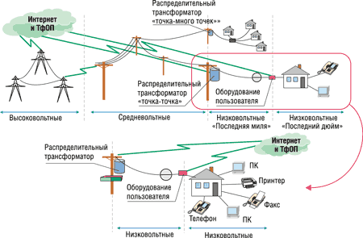
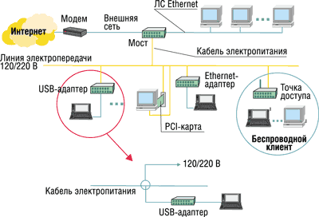

Галина Большова
Сегодня существует немало технологий широкополосного доступа в Интернет (xDSL, ISDN, кабельные модемы, WiFi и т. д.), но несмотря на все их множество, ни одна из технологий не стала "идеальной последней милей". Поэтому и поиск новых технических решений не прекращается. И одно из них -- широкополосный доступ по электрическим проводам.
Потенциальные преимущества такого доступа огромны - фактически сеть может быть развернута в любом месте, где есть электроснабжение. Но особенно привлекательна данная технология для домашних сетей и небольших офисов. Ее успех фактически означал бы революционный прорыв в решении проблемы "последней мили" без новых проводов и использования радиочастот. А в нашей стране эта технология могла бы стать одним из наиболее простых способов обеспечения связи в тех удаленных и труднодоступных районах, куда все же сумели дотянуться линии электропередач.
Первые сети передачи данных по линиям электросети, так называемые PLC-системы (PowerLine Communication) появились более 70 лет назад. Они использовались в основном для сигнализации в энергосистемах и на железных дорогах и, конечно, были очень низкоскоростными. Качественный сдвиг в развитии PLC-технологии произошел около пяти лет назад благодаря зародившейся сразу в нескольких европейских странах идее организовать "последнюю милю" с помощью широкополосного доступа по электросети. Первопроходцами таких услуг доступа в Интернет стали энергетические компании Англии и Германии, выступившие в качестве операторов подобных сетей.
Классификация
Электрические сети подразделяются на три класса (рис. 1): высоковольтные (100 кВ и более), средневольтные (4-30 кВ) и низковольтные (до 0,4 кВ). Наружные линии электропередачи (ЛЭП), неэкранированные и плохо защищенные от воздействия внешних помех, пригодны лишь для передачи сигнализации или данных с относительно низкой скоростью - обычно до 100 кбит/с. Однако чем меньше длина линии и ниже напряжение, тем выше скорость передачи. Поэтому ЛЭП с напряжением свыше 4 кВт и не пользуются массовым спросом.
|  |
| Рис. 1. Классификация линий доступа по электросети.
|
Для организации широкополосного доступа наиболее пригодным считается более короткий и менее "шумящий" низковольтный участок электрической сети -- от трансформаторной подстанции до бытовых розеток. Максимальная удаленность потребителей от подстанции обычно не превышает 300 м, что позволяет передавать данные со скоростью от 1 до 10 Мбит/с.
Смещение интересов
Первоначально все усилия по созданию PLC-систем были направлены на решение проблемы "последней мили". Считалось, что новая технология составит достойную конкуренцию своим именитым собратьям -- ADSL и кабельным модемам. Однако в процессе разработки реального оборудования появился ряд серьезных препятствий, как технических, так и нормативно-правовых. Самыми серьезными оказались два аспекта - борьба с помехами и строгое соблюдение требований электромагнитной совместимости (ЭМС) с радиолюбительскими службами, работающими в диапазоне частот 1,6-30 МГц.
Если технические вопросы удалось решить достаточно просто, то выполнение жестких требований к допустимому уровню излучаемых сигналов оказалось весьма проблематичным (см. врезку "Проблемы электромагнитной совместимости"). Именно эти трудности пока не позволяют PLC достичь заметных побед на территории европейских стран. В результате технологическая новинка "переехала" из Европы на другие континенты - в Японию, Россию, Бразилию, Индию, где в настоящее время работы по использованию PLC для решения проблем "последней мили ведутся весьма активно. И хотя в Европе интерес к данной технологии отнюдь не угас, акцент заметно сместился с подключения к Интернету на организацию домашних сетей.
Напомним, что под домашними сетями понимается совокупность компьютеров и вспомогательного оборудования (принтеры, цифровые камеры, МР3-плееры), установленного на разных этажах зданий или в разных подъездах и объединенных в сеть. Рынок домашних сетей зародился всего несколько лет назад и своим "происхождением" многом обязан Интернету, поскольку первые такие сети создавались в основном ради того, чтобы через Сеть получить доступ к интерактивным играм и развлечениям. Сегодня ситуация радикальным образом изменилась, и рынок домашних сетей развивается очень быстрыми темпами. Оказалось, что при большом количестве пользователей домашней сети легче и, главное, экономически выгоднее организовать широкополосный доступ для всех, чем тянуть индивидуальные линии для каждого.
Но здесь следует заметить, что главный сдерживающий фактор для развития домашних сетей PLC - это, как ни странно, не стоимость оборудования, а проблемы защиты от вандализма, поскольку основные устройства сети расположены вне жилых помещений, в не контролируемой пользователями зоне (в подъезде, чердачном помещении, на крыше).
Проблемы электромагнитной совместимостиСегодня в Европе для сетей связи, использующих линии электропередачи в диапазоне до 150 МГц, действует стандарт CENELEC, устанавливающий требования по электромагнитной совместимости (ЭМС)и помехозащищенности (табл. 1). Однако международные стандарты, регламентирующие широкополосный доступ по электросети в диапазоне частот 1,6-30 МГц, где требуется обеспечить ЭМС с радиолюбительскими службами, отсутствуют. В связи с этим все страны вынуждены руководствоваться своими национальными нормами: в США это FCC Nr 15, в Германии -- NB30, в Великобритании --- MPT1570 и т. д. Заметим, что норма - это не стандарт, а всего лишь ограничительная кривая, согласованная с частотным планом, принятым в той или иной стране. Наиболее жесткие нормы установлены в США, где максимально допустимый уровень напряженности поля составляет 70 дБмкВ/м и не адаптирован к распределению естественных помех, возникающих в каналах связи. В отличие от США, в европейских странах требования к максимально допустимому уровню излучения зависят от диапазона частот. Таблица 1. Требования стандарта CENELEC в полосе частот 3-148,5 кГц
Германия стала одной из первых стран, где весной 2001 г. (спустя два года после их разработки и ожесточенных споров) были одобрены нормы допустимого уровня излучения для всех видов проводных технологий (включая CATV, xDSL и PLC), которые используют диапазон частот от 9 кГц до 3 ГГц (табл. 2). Хотя нормы NB30 на 30 дБ ниже, чем FCC Nr 15 в США, однако и их требования не позволяют создавать сети PLC той протяженности, которая достаточна для организации доступа в Интернет, так что реализовать доступ в Интернет без установки промежуточных ретрансляторов практически невозможно. Отметим, что после одобрения NB30 многие ведущие производители, в том числе и Siemens, заявили об уходе с этого рынка. Таблица 2. Требования нормы NB30 на допустимый уровень напряженности поля для диапазона частот от 9 кГц до 3 ГГц
Вслед за Германией и в ряде других стран Европы были приняты аналогичные требования к допустимому уровню излучения. Так, в Великобритании с августа 2001 г. действуют нормы MPT1570, по своим требованиям практически совпадающие с NB30, но охватывающие более узкий диапазон частот: от 9 кГц до 1,6 ГГц. В Ирландии и Норвегии тоже установлены уровни допустимого излучения, причем на 20 дБ выше, чем по NB30. Но в Дании вообще отказались от введения общих норм и решают вопрос о допустимом уровне излучения в каждом конкретном случае с учетом интересов всех радиослужб. |
Технологии доступа
Принцип работы PLC-систем основан на разделении с помощью фильтров низкочастотных электрических сигналов и высокоскоростного трафика данных, передаваемого на более высоких частотах (1,6-30 МГц). Выбор такого диапазона неслучаен, поскольку на более высоких частотах резко увеличивается затухание сигналов, а на более низких трудно обеспечить широкую полосу.
На достоверность передачи данных сильно влияют бытовые помехи, например, от различных электроприборов или от ламп дневного освещения, создающих непрерывное шумовое излучение. Однако особо опасны импульсные помехи (длительностью до 1 мкс), возникающие при работе сварочных аппаратов, электродрелей и СВЧ-печей.
Практически все современные PLC-системы базируются на одной из двух технологий доступа: QPSK или OFDM. В первом случае данные передаются с помощью QPSK-модуляции, а сигнал в эфире "размазывается" по широкой полосе частот (сигнал с расширенным спектром -- spread spectrum). Такое излучение практически незаметно на фоне окружающего шума (помех), а потому не мешает работе радиолюбительских станций, гарантируя при этом необходимую достоверность передачи данных. Другая технология основана на методе модуляции, известном как OFDM -- ортогональное частотное разделение каналов с одновременной передачей сигналов на разных несущих. Этот метод также гарантирует высокую достоверность передачи и устойчивость к искажениям сигнала.
В основу первого промышленного стандарта HomePlug 1.0 (одобрен летом 2001 г.) легла технология PowerPacket, предложенная американской фирмой Intellon (http://www.intellon.com). Ее основой стал модифицированный OFDM-метод, в котором исходный поток данных разбивается на пакеты и каждый из них передается в диапазоне частот 4,3-20,9 МГц с использованием относительной фазовой модуляции (DBPSK или DQPSK) на собственной поднесущей. Максимальная информационная скорость передачи - 14 Мбит/с. Что же касается скорости по эфиру, то в случае применения DQPSK-модуляции и всех 84 несущих она достигает 20 Мбит/с. Но средняя скорость передачи не превышает 8 Мбит/с при вероятности ошибки на бит 10-7.
Высокая эффективность работы оборудования стандарта HomePlug в сложной помеховой обстановке обеспечивается за счет гибкого перераспределения мощности излучаемого сигнала в рабочей полосе. С этой целью в устройствах реализованы три процедуры:
- адаптации к реальной помеховой обстановке за счет исключения отдельных пораженных помехами рабочих частот;
- оперативной смены метода модуляции на индивидуальных несущих (DBPSK или DQPSK);
- снижения скорости передачи данных для повышения помехоустойчивости (за счет выбора параметров сверточного кода -- 1/2 или 3/4).
Необходимо отметить, что адаптация к помеховой обстановке осуществляется без потери данных. Например, если одна из 84 рабочих частот поражена помехой, она просто отключается. Однако передаваемый на пораженной частоте пакет данных не теряется, а автоматически восстанавливается при последующей обработке информации в приемнике. Достигается это за счет перемежения и каскадного кодирования, основанного на сочетании блочного кода Рида-Соломона и сверточного кода с декодированием по алгоритму Витерби. Такой принцип кодирования позволяет исправлять не только одиночные ошибки, но и пакеты ошибок.
Для подавления узкополосных помех существует процедура анализа помеховой обстановки и адаптивного режектирования "пораженных" участков спектра, благодаря чему технологию HomePlug можно использовать в самых разных условиях эксплуатации, в том числе и тогда, когда в какой-либо местности запрещено использование отдельных частот.
На MAC-уровне спецификации HomePlug используют протокол CSMA/CA, который благодаря наличию периода ожидания до начала каждого сеанса позволяет снизить уровень внутрисистемных конфликтов. На физическом уровне CSMA/CA регламентирует передачу пакетов таким образом, что каждая посылка передается лишь после оценки состояния канала связи и поступления от приемника сигнала, свидетельствующего о его готовности.
Новая версия стандарта, известная как HomePlug AV, разрабатывалась в качестве замены HomePlug 1.0, расширяющей его возможности. В спецификациях HomePlug AV предусмотрена высококачественная передача изображений, развлекательных программ, сигналов телевидения высокой (HDTV) и стандартной (SDTV) четкости.
Архитектура
Клиентское оборудование подключается к сети, построенной на базе промышленного стандарта HomePlug, через модем, который отфильтровывает паразитную составляющую сетевого напряжения и выделяет полезный высокочастотный сигнал. Соединение со всеми расположенными рядом устройствами устанавливается автоматически благодаря встроенному в модем PLC-контроллеру. Сигнал по электрической сети поступает на компьютер пользователя, тоже оснащенный PLC-модемом, и через него получает выход в Интернет (рис. 2).
|  |
| Рис. 2. Архитектура сети широкополосного доступа.
|
Скорость передачи данных в такой сети может динамически изменяться, адаптируясь к характеристикам передающей среды и окружающей помеховой обстановке. Дальность связи зависит от физического состояния линий и текущей нагрузки (при скорости передачи 14 Мбит/с максимальное расстояние между клиентскими компьютерами не должно превышать 90 м). Передача данных на большие расстояния тоже возможна, однако требует промежуточных усилителей, так называемых ретрансляторов (применяются крайне редко).
По сути архитектура сети широкополосного доступа по электрическим проводам аналогична сети кабельного телевидения, т. е. общая пропускная способность распределяется между всеми пользователями, подключенными к общей физической среде передачи.
Однако есть и отличия. Электричество в наши дома поступает по нескольким фазовым проводам, и каждая квартира обычно "запитывается" только от одного из них. Это означает, что сеть будет состоять из нескольких физически разделенных сегментов, следовательно, ее конфигурация в общем случае будет не полнодоступной. В то же время в пределах каждого сегмента такая сеть имеет древовидную структуру, в которой все розетки гальванически связаны друг с другом и подключены к общему электрическому вводу. Чтобы в домашней сети установить соединение между пользователями разных сегментов, необходимо предусмотреть специальные мосты, включенные между линиями электропередачи с разными фазами.
Конкуренты
Доступ по электросети не требует затрат на создание сетевой инфраструктуры, а потому способно стать почти идеальным решением для домашних сетей. Из всего многообразия технологий, которые могли бы претендовать сегодня на роль лидеров в этом сегменте рынка, реальными конкурентами HomePlug, пожалуй, можно считать только две -- это стандарты 802.11b и HomePNA. И если 802.11b последнее время стал предметом активных обсуждений, то второй явно "не избалован вниманием".
Технология связи по телефонной сети, базирующаяся на стандарте HomePNA 2.0, создана альянсом Home Phoneline Networking Alliance (HPNA). Последняя версия этого стандарта обеспечивает скорость передачи до 10 Мбит/с (в HomePNA 1.0 -- 1 Мбит/с). Сетевая инфраструктура HomePNA построена на основе шинной топологии и объединяет несколько телефонных сегментов аналогично тому, как подключают к линии несколько телефонных аппаратов.
Основное различие между HomePNA 2.0 и HomePlug 1.0 -- в методах доступа. Передача данных по телефонной сети (в отличие от HomePlug) базируется на использовании иного метода модуляции -- квадратурной амплитудной модуляции с частотным разнесением (FDQAM), которая позволяет повысить надежность, передавая один и тот же пакет с QAM на разных несущих.
Безусловно, у каждой технологии есть свои преимущества и недостатки. Так, беспроводные технологии позволяют получать доступ к сети из любой точки внутри и снаружи дома, независимо от наличия телефонного гнезда или электрической розетки. С ноутбуком можно свободно передвигаться по дому, не заботясь о проводах. Однако только сети HomePlug и HomePNA обеспечивают предоставление широкополосных услуг без создания специальной сетевой инфраструктуры (и здесь HomePlug имеет преимущество в силу того, что электрические сети более распространены, чем телефонные).
С точки зрения простоты построения сети технология HomePlug предпочтительнее HomePNA, так как число телефонных розеток в квартире несравнимо меньше, чем электрических. Кроме того, для подключения клиентского оборудования к сети HomePlug требуется один кабель питания, а в HomePNA два - телефонный и силовой.
По пропускной способности стандарт HomePlug 1.0 не уступает двум своим основным конкурентам - 802.11b и HomePNA. Однако нелишне заметить, что средняя пропускная способность для всех трех технологий традиционно отличается от теоретической на 50-80% (табл. 3).
Таблица 3. Особенности стандартов для организации "последней мили"
| HomePlug 1.0 | HomePNA 2.0 | 802.11b | |
| Сертификационный центр оборудования | HomePlug Powerline Alliance | Home Phoneline Networking Alliance | Wi-Fi |
| Тип передающей среды | Электрическая сеть | Телефонная сеть | Беспроводная сеть |
| Метод доступа | OFDM (84 несущих) | FDQAM | DSSS |
| Максимальная скорость, Мбит/с | 14 | 10 | 11 |
| Средняя скорость, Мбит/с | 6-7 | 7-8 | 5-6 |
В системах на базе HomePlug задержки с доставкой информации существенно меньше, чем в сетях стандарта 802.11b. Этот эффект объясняется тем, что в сети на основе 802.11b трафик обязательно проходит через удаленную точку доступа, а в HomePlug два компьютера, подключенные к соседним розеткам, взаимодействуют друг с другом напрямую. Поэтому в итоге стандарт HomePlug обеспечивает более высокое быстродействие, чем беспроводные сети 802.11b. По технико-экономическим показателям технология HomePlug тоже опережает своих конкурентов (см. врезку "Какая домашняя сеть лучше").
Какая домашняя сеть лучшеДопустим, что в домашней сети, где могут использоваться три технологии доступа - PLC, HomePNA и 802.11b, каждая семья имеет два настольных компьютера и один портативный, а также цифровой MP3-плеер (рис. 3).
Сравним эти три технологии. Как видно из табл. 4, по количеству используемого оборудования HomePlug явно превосходит конкурентов. Таблица 4. Состав оборудования для домашней сети
Кроме того, если рассчитать стоимость реализации такой сети (рис. 4), то видно, что и по ценовым показателям сеть HomePlug оказывается впереди.
|
|||||||||||||||||||||||||||
Аспекты безопасности
Защита данных - одна из главных проблем для всех трех сравниваемых технологий доступа. Но в домашних сетях, в отличие от офисных, важнее защита от проникновения в сеть посторонних лиц, чем утечка информации. Наиболее уязвимой с точки зрения несанкционированного доступа считается сеть 802.11b, поскольку ее излучение можно отследить в любой точке как внутри дома, так и извне. А чтобы злоумышленник смог получить доступ к сетям HomePlug и HomePNA, ему необходимо физически подключиться либо к домашней электросети, либо к коммутационной панели телефонных линий (если она, конечно, не имеет надежной защиты).
В отличие от WEP-шифрования, неоднократно приводившего к нарушению безопасности, в HomePlug используется алгоритм DES с 56-разрядным ключом, который гарантирует практически такую же высокую защищенность трафика, как в проводных сетях. А применение сетевых ключей шифрования NEK (Network Encryption Key) дает возможность логически разделить электрическую сеть на сегменты и предоставлять в каждом из них независимые услуги. Ключи генерируются по алгоритму PBKDF1, согласно которому ключ не хранится в компьютере, а вычисляется при каждом сеансе на основе сетевого пароля, вводимого пользователем.
Оборудование
Продвижением технологии HomePlug на рынке домашних сетей занимается созданный в 2000 г. промышленный консорциум HomePlug Powerline Alliance (http://www.homeplug.org), в который входит более 90 крупных мировых компаний. Наряду с научными исследованиями, касающихся проблем передачи данных по сетям электропитания, и работами по совершенствованию стандарта, альянс проводит сертификацию оборудования разных производителей. В настоящее время такую сертификацию прошли более десятка различных изделий HomePlug 1.0, изготовленных различными компаниями.
Базовое устройство для сетей HomePlug 1.0 - набор микросхем INT5130. На его основе выпускаются адаптеры и мосты с интерфейсами трех типов: Ethernet, PCI и USB.
Карта HomePlug PCI вставляется в свободный слот компьютера, а USB-адаптеры обеспечивают соединение как с портативными ПК, так и с периферийными устройствами, например, принтером или цифровой камерой. Для расширения функциональных возможностей сетей HomePlug выпускаются устройства типа POE (Power over Ethernet). Их применение оправданно в тех случаях, когда установка дополнительных розеток по каким-либо причинам невозможна (например, в исторических зданиях). Набор POE включает два типа устройств -- инжекторы мощности (POE-100) и расщепители (POE-100S).
Стоимость базового чипсета INT5130 сравнительно невелика -- 24 долл. Что же касается цен на адаптеры и мосты HomePlug 1.0, то они сравнимы с аналогичным оборудованием для сетей HomePNA и 802.11b.
***
Казалось бы, в нашей стране технология PLC должна пользоваться огромным спросом. Но передача данных по российским электросетям связана с дополнительными трудностями, поскольку они отличаются от западных не только значениями напряжения и частоты, но и большей нестабильностью основных параметров, а также повышенным уровнем шумов. В электропроводке наших домов преимущественно используются алюминиевые, а не медные провода, следовательно, она характеризуется худшей электропроводностью и большими потерями при распространении. Вторая проблема, с которой часто приходится сталкиваться в наших сетях, -- сетевые фильтры, применяемые для фильтрации сетевых помех при подключении компьютеров. Дело в том, что такой фильтр может воспринять сетевой трафик как некий шум и вырезать его. И обе проблемы вряд ли разрешимы в ближайшем будущем, а потому, несмотря на всю их привлекательность, сети на базе технологии HomePlug пока не смогут занять достойное место на российском рынке.